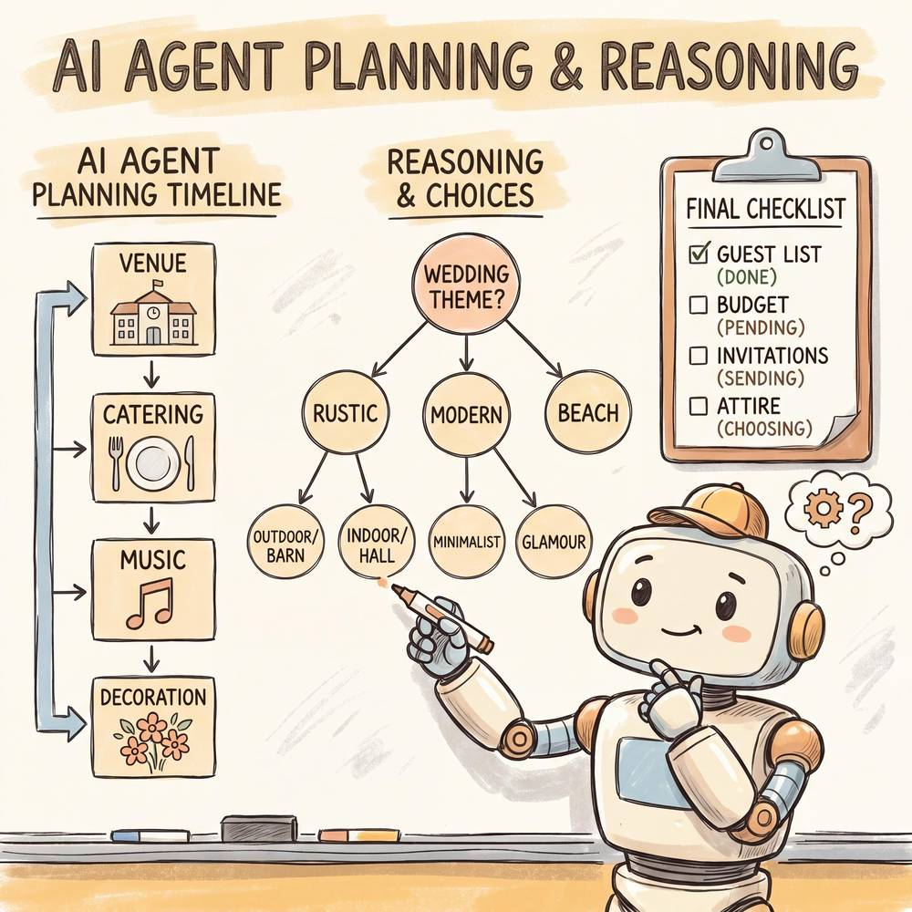

第七章：AI Agent 的规划与推理
核心命题：一个真正智能的 Agent，不仅要能"做事"，更要能"想清楚再做事"。规划（Planning）与推理（Reasoning）是 Agent 从"工具调用器"跃升为"自主决策者"的关键能力。
在前几章中，我们已经了解了 AI Agent 的基本架构、记忆系统与工具调用机制。然而，如果一个 Agent 只是被动地响应指令、逐步执行，它与一个精心编写的脚本并无本质区别。真正让 Agent 具备"智能"特征的，是它的 规划与推理能力——即面对一个复杂目标时，能够自主地将其拆解为可执行的子任务，在执行过程中持续反思与纠错，并在环境变化时灵活调整策略。
本章将系统性地剖析 AI Agent 的规划与推理机制，从任务分解的基本方法到前沿的树搜索策略，从静态规划到动态重规划，全面揭示 Agent "思考"的内在逻辑。
7.1 任务分解（Task Decomposition）
7.1.1 为什么需要任务分解？
人类在面对复杂问题时，几乎不会试图"一步到位"地解决它。我们会本能地将一个大目标拆分为一系列小目标，再逐个击破。AI Agent 同样如此——大语言模型（LLM）在处理简单、明确的指令时表现优异，但面对模糊、多步骤的复杂任务时，如果不进行分解，往往会遗漏关键步骤或陷入混乱。
任务分解的核心价值在于：
- 降低认知负荷：将复杂问题转化为 LLM 擅长处理的简单子问题。
- 提高可控性：每个子任务的输入输出明确，便于验证和调试。
- 支持并行化：独立的子任务可以并行执行，提升效率。
- 增强容错性：某个子任务失败时，不必从头开始，只需重试该子任务。
7.1.2 四种主流任务分解方法
一、自上而下分解（Top-Down Decomposition）
自上而下分解是最直觉的方法：从最终目标出发，逐层细化为更具体的子目标，直到每个子目标都足够简单，可以直接执行。
思路：总目标 → 主要阶段 → 具体任务 → 原子操作
这种方法的优势在于结构清晰、全局视野好，适合目标明确、流程相对标准化的任务。缺点是对未知领域的覆盖可能不足——如果 Agent 对任务领域不熟悉，自上而下的分解容易遗漏关键环节。
二、自下而上分解（Bottom-Up Decomposition）
与自上而下相反，自下而上分解从已知的、可执行的原子操作出发，逐步组合、归纳，最终汇聚为完成总目标的完整方案。
思路：列举所有可能的操作 → 分组归类 → 确定执行顺序 → 组合为完整计划
这种方法在探索性任务中尤为有用。例如，当 Agent 面对一个从未见过的 API 集合时，先了解每个 API 能做什么，再思考如何组合它们来达成目标，往往比自上而下更有效。
三、链式分解（Sequential / Chain Decomposition）
链式分解关注的是任务之间的 时序依赖关系。它将总任务分解为一条线性的执行链，每个步骤的输出作为下一个步骤的输入。
思路：步骤1 → 步骤2 → 步骤3 → ... → 最终结果
这是最简单的分解模式，适用于流程清晰、步骤之间强依赖的任务。典型的 Chain-of-Thought（CoT）提示就是这种模式的体现。
四、LLM 辅助分解（LLM-Assisted Decomposition）
这是当前 AI Agent 最常用的方式：直接让大语言模型作为"规划器"，根据用户目标生成任务分解方案。
典型的提示模板如下：
你是一个任务规划专家。用户的目标是：{goal}
请将这个目标分解为具体的、可执行的子任务列表。
要求：
1. 每个子任务应该足够具体，可以独立执行
2. 子任务之间的依赖关系要明确标注
3. 估计每个子任务的难度和所需资源LLM 辅助分解的强大之处在于它能利用模型的广泛知识来生成合理的分解方案，即使面对 Agent 开发者没有预先编码的任务类型。然而，它也存在幻觉、遗漏或过度分解的风险，因此通常需要配合验证机制使用。
7.1.3 完整示例：组织一场婚礼
让我们用一个生动的例子来具体展示任务分解的过程。假设用户对 Agent 说：
"帮我规划一场 100 人左右的婚礼，预算 20 万元，时间定在今年 10 月。"
第一层分解（自上而下，识别主要阶段）：
总目标：组织一场婚礼（100人，20万预算，10月）
├── 阶段1：前期筹备（6-4个月前）
├── 阶段2：细节落实（3-2个月前）
├── 阶段3：临期准备（1个月-1周前）
├── 阶段4：婚礼当天执行
└── 阶段5：婚后收尾第二层分解（继续细化每个阶段）：
阶段1：前期筹备
├── 1.1 确定婚礼风格与主题（中式/西式/户外/室内）
├── 1.2 制定详细预算分配表
│ ├── 场地：5万
│ ├── 餐饮：6万
│ ├── 摄影摄像：2万
│ ├── 婚庆布置：3万
│ ├── 婚纱礼服：2万
│ ├── 预留应急：2万
├── 1.3 选定并预订婚礼场地（至少考察3个备选）
├── 1.4 确定宾客名单初稿
└── 1.5 选定婚庆公司或独立策划师
阶段2：细节落实
├── 2.1 发送请柬并跟踪回复（线上+线下）
├── 2.2 确定餐饮方案与菜单
├── 2.3 预订摄影摄像团队
├── 2.4 选定并试穿婚纱/礼服
├── 2.5 确定婚礼流程与节目单
├── 2.6 预订花艺、甜品台、签到台等
└── 2.7 安排伴郎伴娘及分工
阶段3：临期准备
├── 3.1 最终确认到场人数，调整座位表
├── 3.2 婚礼彩排
├── 3.3 准备婚礼用品清单（戒指、红包、喜糖等）
├── 3.4 确认所有供应商的到场时间与对接人
└── 3.5 准备应急预案（天气、设备故障等）
阶段4：婚礼当天
├── 4.1 场地布置与检查（提前4小时）
├── 4.2 新人化妆造型
├── 4.3 接亲/迎亲环节
├── 4.4 仪式环节（宣誓、交换戒指等）
├── 4.5 宴席与互动环节
└── 4.6 送客与合影
阶段5：婚后收尾
├── 5.1 整理并感谢宾客
├── 5.2 与供应商结算尾款
├── 5.3 整理照片视频素材
└── 5.4 处理退换与善后事宜依赖关系标注：
| 子任务 | 前置依赖 | 可否并行 |
|---|---|---|
| 1.2 预算分配 | 1.1 风格确定 | 否 |
| 1.3 场地预订 | 1.2 预算确定 | 否 |
| 2.1 发请柬 | 1.4 宾客名单 | 否 |
| 2.2 餐饮方案 | 1.3 场地确定 | 是（与2.3-2.6并行） |
| 2.3 摄影预订 | 1.2 预算确定 | 是（与2.2并行） |
| 3.1 确认人数 | 2.1 请柬回复 | 否 |
| 3.2 婚礼彩排 | 2.5 流程确定 | 否 |
这个例子清晰地展示了任务分解如何将一个看似庞大的目标，转化为一系列可管理、可跟踪、可执行的具体步骤。对于 AI Agent 来说，每一个叶子节点（原子任务）都可以映射到一次工具调用、一次信息检索或一次与用户的确认交互。

7.2 自我反思（Self-Reflection）
7.2.1 反思的必要性
想象一个学生考完试后的场景：如果他做完就交卷，可能会因为粗心大意丢掉很多分；但如果他留出时间 检查试卷——重新审视自己的答案，检查计算是否正确、题意是否理解准确、有没有遗漏——成绩往往会显著提高。
AI Agent 的自我反思机制就是这个"检查试卷"的过程。在执行任务的过程中，Agent 不仅要"做"，还要不断地"回头看"：我的计划合理吗？执行结果符合预期吗？有没有更好的方法？
没有反思能力的 Agent 就像一个"莽撞的执行者"——它可能高效地完成了所有步骤，但最终交付的结果却偏离了目标，因为它从未质疑过自己的方向。
7.2.2 Reflexion 框架
Reflexion（Shinn et al., 2023）是自我反思领域最具影响力的框架之一。它的核心理念是：让 Agent 从失败中学习，而不是简单地重试。
Reflexion 的工作流程分为三个环节，形成一个闭环：
┌─────────────────────────────────────────────┐
│ Reflexion 循环 │
│ │
│ ┌──────────┐ ┌──────────┐ ┌───────────┐ │
│ │ Actor │───→│Evaluator │───→│Reflector │ │
│ │ (执行者) │ │ (评估者) │ │ (反思者) │ │
│ └──────────┘ └──────────┘ └───────────┘ │
│ ↑ │ │
│ │ 反思记忆（经验教训） │ │
│ └───────────────────────────────┘ │
└─────────────────────────────────────────────┘- Actor（执行者）：根据当前计划和历史反思经验，执行任务并产生结果。
- Evaluator（评估者）：对执行结果进行评估，判断是否成功、是否满足目标要求。评估可以是基于规则的（如单元测试是否通过）或基于 LLM 的（如"这个回答是否完整、准确？"）。
- Reflector（反思者）：当评估结果不理想时，反思者会分析失败的原因，总结经验教训，并将这些"反思记录"存入长期记忆，供下一轮执行参考。
Reflexion 与简单重试的区别：
简单重试（Retry）就像一个学生考砸后重新考一次，但用完全相同的方法答题——他很可能犯同样的错。Reflexion 则像是学生在重考之前，先分析了自己的错题本，搞清楚是知识点没掌握、还是审题不仔细、还是时间分配有问题，然后带着这些认知重新上阵。
7.2.3 关键反思问题
一个高质量的反思过程，通常需要 Agent 回答以下关键问题：
| 反思维度 | 关键问题 | 示例 |
|---|---|---|
| 结果评估 | 执行结果是否达成了目标？ | "用户要求查询北京的天气，我返回的是上海的天气——目标未达成。" |
| 过程回溯 | 哪一步出了问题？ | "在第3步调用天气API时，我传入了错误的城市参数。" |
| 原因分析 | 为什么会出错？ | "因为我在解析用户意图时，错误地将'北京'映射为了上海的城市编码。" |
| 策略改进 | 下次应该怎么做？ | "在调用API之前，应该先验证城市名称与编码的映射是否正确。" |
| 知识更新 | 有没有新的认知需要记录？ | "北京的城市编码是101010100，不是101020100。" |
| 方法论反思 | 我的整体策略是否需要调整？ | "对于地理信息相关的查询，我应该增加一个城市编码验证的步骤。" |
7.2.4 反思的实际应用模式
在实际的 Agent 系统中，反思通常以下面几种方式嵌入到执行流程中：
- 逐步反思（Step-level Reflection）：每执行一步，就检查一次结果是否符合预期。开销较大，但精度高。
- 阶段性反思（Phase-level Reflection）：在每个主要阶段结束后进行反思。平衡了效率与质量。
- 结果反思（Outcome-level Reflection）：只在最终结果出来后进行反思。开销最小，但纠错时可能需要大面积返工。
- 触发式反思（Trigger-based Reflection）：当检测到异常信号（如工具调用失败、结果置信度低、用户负面反馈）时才触发反思。这是实践中最常用的模式。
7.3 树搜索与蒙特卡洛方法
7.3.1 从线性思考到树状探索
Chain-of-Thought（CoT）让 LLM 学会了"一步一步想"，但它本质上是一条 线性的 思考链——一旦某一步走错，后续的推理都会建立在错误的基础上，一错到底。
现实世界的问题往往有多种解法，每一步都有多个选择，就像下棋一样。一个优秀的棋手不会只考虑一种走法，而是会在脑中同时推演多个方案，评估每个方案的后果，然后选择最优的那一步。
Tree-of-Thought（ToT）和蒙特卡洛树搜索（MCTS）就是将这种"多路径探索"的能力赋予 AI Agent 的方法。
7.3.2 Tree-of-Thought（ToT）
Tree-of-Thought（Yao et al., 2023）的核心思想是：将推理过程组织为一棵树，每个节点代表一个"思考状态"，每条边代表一种"思考步骤"，通过搜索算法找到最优路径。
[初始问题]
/ | \
[思路A] [思路B] [思路C]
/ \ | \
[A1] [A2] [B1] [C1]
/ \ |
[A1a] [A2a] [B1a] ← 最终选择最优路径ToT 的工作流程：
- 思路生成（Thought Generation）：对于当前状态，让 LLM 生成多个可能的下一步思考。这些"思考"可以是一句话、一个推理步骤、一段代码片段等。
- 状态评估（State Evaluation）：对每个生成的思考状态进行评估——它离最终目标有多近？是否走入了死胡同？评估可以由 LLM 自身完成（自评），也可以使用外部验证器。
- 搜索策略（Search Strategy）：使用广度优先搜索（BFS）或深度优先搜索（DFS）来遍历这棵思维树，找到最有希望的路径。
- 路径选择：根据评估结果，选择得分最高的完整路径作为最终答案。
与 CoT 的对比：
| 维度 | Chain-of-Thought | Tree-of-Thought |
|---|---|---|
| 探索方式 | 单条路径，线性推进 | 多条路径，树状展开 |
| 容错能力 | 一步错则步步错 | 可以回溯，尝试其他分支 |
| 计算开销 | 低（一次生成） | 高（多次生成+评估） |
| 适用场景 | 简单推理、明确步骤 | 复杂推理、创意生成、数学证明 |
| 类比 | 沿着一条路一直走 | 走到岔路口时，先探探每条路再选 |
7.3.3 蒙特卡洛树搜索（MCTS）
蒙特卡洛树搜索（Monte Carlo Tree Search）最初因在围棋 AI（如 AlphaGo）中的成功应用而广为人知。它现在被引入 AI Agent 的推理过程中，用于处理那些搜索空间巨大、难以穷举的规划问题。
MCTS 的核心循环包含四个步骤：
┌──── 选择（Selection） ────┐
│ │
↓ │
扩展（Expansion） │
│ │
↓ │
模拟（Simulation） │
│ │
↓ │
回溯（Backpropagation） ─────────┘- 选择（Selection）：从根节点出发，沿着"最有前途"的分支向下选择，直到到达一个尚未完全展开的节点。选择策略通常使用 UCB1（Upper Confidence Bound）公式，平衡"利用已知好路径"和"探索未知路径"：
$$ UCB1 = \bar{X}_i + C \sqrt{\frac{\ln N}{n_i}} $$
其中 $\bar{X}_i$ 是节点的平均收益，$N$ 是父节点的访问次数，$n_i$ 是当前节点的访问次数，$C$ 是探索系数。
- 扩展（Expansion）：在选中的节点上，生成一个或多个新的子节点（即新的可能行动或思考步骤）。
- 模拟（Simulation）：从新节点出发，通过快速模拟（rollout）到达一个终局状态，获得一个收益值。在 Agent 场景中，这可以是让 LLM 快速"预演"后续步骤，估计最终结果的质量。
- 回溯（Backpropagation）：将模拟得到的收益值回传给路径上的所有祖先节点，更新它们的统计信息（访问次数、平均收益等）。
用下棋来类比 MCTS：
想象你在下一盘复杂的棋局。你不可能计算出所有可能的走法（太多了），所以你采用这样的策略：
- 选择：你先看看哪些区域的局势最关键，把注意力集中在那里。
- 扩展：你想到了一个新的走法，之前没考虑过。
- 模拟：你在脑中快速推演——"如果我这样走，对方可能这样应，然后我再这样……"不需要精确计算，大致感觉一下结果好不好。
- 回溯：如果模拟的结果不错，你就记住"这个方向值得深入思考"；如果不好，就记住"这条路可能有坑"。
重复这个过程多次之后，你就能对各种走法的好坏有一个越来越准确的判断，最终选出最优的一步。
7.3.4 实际应用场景
树搜索方法在 AI Agent 中的典型应用包括：
- 代码生成：生成多个候选实现方案，通过测试用例评估，选择通过率最高的方案。
- 数学推理：在多个证明思路中搜索，避免一条路走到黑。
- 复杂查询规划：面对需要多步 API 调用的任务，搜索最优的调用序列。
- 创意写作：生成多个故事走向，评估各自的连贯性和吸引力，选择最佳方案。
7.4 Plan-and-Execute 模式
7.4.1 模式概述
Plan-and-Execute 是当前 Agent 系统中最经典、最实用的规划模式之一。它的核心理念简洁而强大：先想清楚，再动手做，最后检查结果。
这个模式将 Agent 的行为分为三个明确的阶段：
┌─────────────┐ ┌─────────────┐ ┌─────────────┐
│ Phase 1 │────→│ Phase 2 │────→│ Phase 3 │
│ 规划阶段 │ │ 执行阶段 │ │ 验证阶段 │
│ (Planning) │ │ (Execution) │ │(Verification)│
└─────────────┘ └─────────────┘ └─────────────┘
│ │ │
▼ ▼ ▼
生成完整的 按计划逐步 检查执行结果
行动计划 执行每个步骤 是否达成目标与 ReAct 模式的对比：
ReAct（Reason + Act）模式采用的是"边想边做"的策略——每一步都先推理、再行动、再观察。这种模式灵活但可能缺乏全局视野。
Plan-and-Execute 则更像一个经验丰富的项目经理：先花时间制定周密的计划，然后分派执行，最后做质量检查。它在全局一致性和效率上通常优于纯 ReAct 模式，但灵活性稍逊。
7.4.2 三阶段详解
Phase 1：规划阶段（Planning）
在这个阶段，Agent 接收用户的目标，综合分析后生成一份完整的行动计划。计划的质量直接决定了后续执行的成败。
一份好的计划应包含：
- 步骤列表：明确的、有序的执行步骤
- 依赖关系：哪些步骤必须先后执行，哪些可以并行
- 资源需求：每个步骤需要调用哪些工具或数据
- 预期输出：每个步骤应该产生什么结果
- 风险评估：可能出现的问题及应对预案
Phase 2：执行阶段（Execution）
按照计划逐步执行。每个步骤通常对应一次或多次工具调用。执行过程中，Agent 需要：
- 忠实地遵循计划（除非遇到需要重规划的情况）
- 记录每个步骤的实际输出
- 将前序步骤的输出作为后续步骤的输入
Phase 3：验证阶段（Verification）
执行完成后，Agent 需要检验最终结果是否满足用户的原始目标。验证可以包括：
- 完整性检查：所有要求的信息/操作是否都已覆盖？
- 正确性检查：结果是否准确？
- 一致性检查：各部分之间是否矛盾？
- 格式检查：输出格式是否符合用户要求？
7.4.3 示例：旅行规划
假设用户说：
"帮我规划一个 5 天的日本东京旅行，预算 1.5 万元，我喜欢美食和动漫文化。"
Phase 1：规划
Agent 生成如下计划：
旅行规划方案：
Step 1: [信息收集] 查询东京当季天气、热门景点、交通信息
Step 2: [机票住宿] 搜索往返机票价格，筛选合适的住宿（靠近地铁站）
Step 3: [预算分配] 根据机票住宿价格，分配餐饮、交通、门票、购物预算
Step 4: [行程编排] 按天编排详细行程，重点安排美食与动漫相关景点
- Day 1: 到达 + 秋叶原（动漫圣地）
- Day 2: 浅草寺 + 筑地市场（美食）
- Day 3: 三� Eagles Cafe（动漫主题咖啡厅）+ 涩谷 + 原宿
- Day 4: 台场（高达基地）+ 丰洲市场
- Day 5: 购物 + 返程
Step 5: [实用信息] 整理签证、交通卡、网络、注意事项等实用信息
Step 6: [汇总输出] 将所有信息整合为完整的旅行手册Phase 2：执行
Agent 按计划逐步执行每个步骤，调用搜索工具查询信息、调用价格比较工具筛选机票和酒店、使用日历工具编排行程等。
Phase 3：验证
Agent 最终检查：
- 总预算是否在 1.5 万元以内？（完整性+正确性）
- 每天的行程是否合理，交通时间是否可行？（一致性）
- 美食和动漫元素是否得到了充分体现？（满足用户偏好）
- 是否遗漏了签证、保险等关键信息？（完整性）
如果验证发现问题（如预算超支），Agent 会回到规划阶段进行调整——这就引出了下一节的"动态重规划"。
7.5 动态重规划能力
7.5.1 为什么需要动态重规划？
古语云："计划赶不上变化。" 即使是最周密的计划，在执行过程中也可能遇到意外情况。就像 开车时使用导航，突然前方发生了交通事故导致严重拥堵——你不会傻等在那里，而是会让导航重新规划一条路线。
AI Agent 面对的"路况变化"包括：
- 工具调用失败：某个 API 不可用、超时、返回错误
- 信息不符合预期：查询到的数据与假设不一致
- 用户需求变更：用户在执行过程中修改了要求
- 资源约束变化：预算不足、时间不够、权限不足
- 环境状态变化：外部世界发生了影响任务的变化
7.5.2 重规划的触发条件
Agent 需要建立明确的重规划触发机制，常见的触发条件包括：

| 触发条件 | 示例 | 紧急程度 |
|---|---|---|
| 步骤执行失败 | API返回500错误 | 高 |
| 结果偏离预期 | 查询结果为空 | 中 |
| 依赖条件不满足 | 前序步骤的输出不符合后续步骤的输入要求 | 高 |
| 用户反馈调整 | 用户说"预算改成10万" | 中 |
| 超时 | 某步骤执行时间超过阈值 | 中 |
| 发现更优路径 | 在执行过程中发现有更好的方案 | 低 |
7.5.3 四种重规划策略
策略一：局部修补（Local Patch）
思路：只修改出问题的那个步骤，其他步骤保持不变。
适用场景：问题局限于某个具体步骤，不影响整体计划的结构。
类比：开车时前面有个小坑，你只需要微调方向盘绕过去，不需要改变整条路线。
原计划：A → B → C → D → E
C 步骤失败
修补后：A → B → C'(替代方案) → D → E策略二：部分重规划（Partial Replan）
思路：从出问题的步骤开始，重新规划后续的所有步骤，但保留已经成功完成的部分。
适用场景：问题影响了后续多个步骤，但已完成的部分仍然有效。
类比：开车走到半路发现前方一段路封路了。你不需要回到起点，而是从当前位置重新导航一条新路线到目的地。
原计划：A → B → C → D → E
C 步骤后情况剧变
重规划后：A → B → (已完成) → F → G → H（全新的后续路径）策略三：全局重规划（Full Replan）
思路：放弃当前计划，从零开始重新规划。
适用场景：原始假设发生了根本性变化，整个计划的前提不再成立。
类比：你原计划开车去某个城市，结果发现那个城市因台风封城了。这时你需要完全重新考虑——换一个目的地，或者改期出发。
原计划：A → B → C → D → E（全部作废）
全新计划：X → Y → Z策略四：渐进式调整（Incremental Adjustment）
思路：不是一次性重新规划，而是在执行每一步之后，根据最新状态对下一步进行微调。这实际上是 Plan-and-Execute 与 ReAct 的混合模式。
适用场景：环境高度动态、不确定性大的场景。
类比：在暴风雨中开船。你有一个大致的航向，但每隔几分钟就需要根据风向、浪高调整一下舵的角度。你不会在暴风雨开始前就规划好接下来每分钟舵的角度——那是不可能的。
7.5.4 重规划的决策流程
检测到异常
│
▼
评估异常影响范围
│
├── 影响单个步骤 ──→ 局部修补
│
├── 影响后续多个步骤 ──→ 部分重规划
│
├── 根本前提失效 ──→ 全局重规划
│
└── 环境持续变化 ──→ 渐进式调整一个成熟的 Agent 系统应该能自动判断使用哪种策略，而不是一遇到问题就全部推倒重来（太浪费），或者只做局部修补（可能治标不治本）。
7.6 不同推理方式的对比
为了帮助读者建立全局视野，下面用一张综合对比表来梳理本章涉及的主要推理与规划方法：
| 维度 | ReAct | Chain-of-Thought (CoT) | Tree-of-Thought (ToT) | Reflexion | Plan-and-Execute |
|---|---|---|---|---|---|
| 核心思想 | 交替推理与行动 | 逐步线性推理 | 多路径树状搜索 | 从失败中学习反思 | 先规划后执行再验证 |
| 推理结构 | 线性（Reason→Act→Observe循环） | 线性链 | 树状 | 循环（执行→评估→反思） | 分阶段（规划→执行→验证） |
| 探索能力 | 单路径 | 单路径 | 多路径并行 | 单路径+迭代改进 | 单路径（计划内） |
| 是否支持回溯 | 否 | 否 | 是（核心优势） | 是（通过反思迭代） | 有限（通过重规划） |
| 计算开销 | 中 | 低 | 高 | 中-高（多轮迭代） | 中 |
| 全局规划能力 | 弱（边走边看） | 弱 | 中 | 弱-中 | 强（核心优势） |
| 适应环境变化 | 强（实时响应） | 弱 | 中 | 中 | 中（需重规划机制） |
| 适用任务类型 | 需要交互的动态任务 | 简单推理、问答 | 复杂推理、创意任务 | 编程、决策等需要试错的任务 | 多步骤、流程化任务 |
| 典型应用 | 对话Agent、工具调用 | 数学推理、逻辑问答 | 数学证明、创意写作 | 代码生成、游戏AI | 项目管理、旅行规划 |
| 与工具交互 | 密切（每步都可能调用工具） | 通常不涉及 | 可选 | 可选 | 执行阶段集中调用 |
| 容错机制 | 通过观察结果自然纠错 | 无 | 通过回溯选择更优路径 | 通过反思记忆避免重复犯错 | 通过验证阶段发现问题 |
| 直觉类比 | 边走边问路的旅行者 | 自言自语解题的学生 | 对弈时推演多步的棋手 | 做完题检查试卷的考生 | 制定旅行攻略再出发的规划者 |
混合使用的趋势
在实际的 Agent 系统中，这些方法很少单独使用，更常见的是 混合架构：
- Plan-and-Execute + ReAct：在宏观层面使用 Plan-and-Execute 做整体规划，在每个步骤的具体执行层面使用 ReAct 进行灵活的推理与行动。
- ToT + Reflexion：使用 ToT 探索多条推理路径，失败后通过 Reflexion 反思并改进搜索策略。
- CoT + Self-Consistency：多次使用 CoT 生成答案，通过投票选出最一致的结果（Self-Consistency Decoding）。
- MCTS + LLM Evaluator：用 MCTS 框架组织搜索过程，用 LLM 作为评估函数来指导搜索方向。
选择哪种推理方式或组合，取决于具体的任务特征：任务的复杂度、不确定性、是否需要工具交互、对延迟的要求、以及可接受的计算预算。
7.7 规划能力的局限与应对
尽管 AI Agent 的规划与推理能力已经取得了显著进步，但它仍然存在不少局限性。认识这些局限，对于合理设计和使用 Agent 系统至关重要。
7.7.1 常见失败模式
失败模式一：过度规划（Over-Planning）
表现：Agent 生成了一个极其详细、面面俱到的计划，但其中很多步骤是不必要的，或者过于细碎导致执行效率极低。
原因：LLM 倾向于"面面俱到"——当被要求规划时，它可能会把所有能想到的步骤都列出来，即使某些步骤并不必要。
应对：
- 在规划提示中明确约束步骤数量上限
- 引入"必要性检验"——每个步骤都需要回答"如果跳过这一步，会影响最终结果吗？"
- 采用渐进式规划，先粗后细
失败模式二：规划与执行脱节（Plan-Execution Gap）
表现：Agent 生成了一个看起来很漂亮的计划，但实际执行时发现很多步骤无法落地——需要的工具不存在、数据获取不到、或者步骤之间的接口不匹配。
原因：LLM 在规划时缺乏对执行环境的准确认知。它可能"幻想"出一些不存在的能力或工具。
应对：
- 在规划阶段注入可用工具和资源的清单，限制规划的范围
- 采用"可行性预检"——生成计划后，先检验每个步骤是否可以被现有工具支撑
- 使用 Grounded Planning（接地规划），即规划过程中实时验证可行性
失败模式三：错误的任务依赖（Wrong Dependencies）
表现：Agent 错误地判断了任务之间的先后关系，导致某些步骤在前置条件未满足时就开始执行，或者明明可以并行的步骤被安排为串行。
原因：LLM 对因果关系和依赖关系的理解有时不够精确，特别是在涉及多个变量相互影响的复杂场景中。
应对：
- 显式要求 Agent 输出依赖关系图（DAG），并进行拓扑排序验证
- 在执行每个步骤前检查前置条件是否已满足
- 引入领域知识约束来校正依赖关系
失败模式四：缺乏常识性判断（Lack of Common Sense）
表现：Agent 的计划在逻辑上是正确的，但在常识层面存在明显问题。例如，安排凌晨3点去餐厅吃饭，或者在暴雨天安排户外野餐。
原因：LLM 虽然拥有大量的世界知识，但在将这些知识应用于具体规划时，有时会出现"遗忘"或"忽略"。
应对：
- 增加常识性验证步骤（如时间合理性检查、天气条件检查）
- 使用专门的常识推理模块进行补充验证
- 在计划中嵌入约束条件，强制 Agent 考虑实际因素
失败模式五：灾难性遗忘与目标漂移（Goal Drift）
表现：在长序列的执行过程中，Agent 逐渐偏离了原始目标。它可能在某个中间步骤中获取到了有趣但无关的信息，然后开始"跑偏"，最终的输出与用户的原始需求南辕北辙。
原因：LLM 的上下文窗口有限，长序列执行过程中早期的目标信息可能被"冲淡"。此外，每一步的局部优化不一定导致全局最优。
应对：
- 在每个步骤中重申原始目标（"Goal Reminder"技术）
- 定期进行"目标对齐检查"——Agent 停下来问自己"我现在做的事情是否还在朝着目标前进？"
- 使用独立的"监督模块"来检测目标漂移
失败模式六：不知道何时该停止（Termination Failure）
表现：Agent 已经完成了目标，但仍然继续执行不必要的步骤；或者Agent陷入了一个无限循环，在几个方案之间反复切换却无法做出最终决策。
原因：LLM 缺乏明确的"完成"概念，特别是在开放式任务中。此外，过度的自我反思可能导致"反思循环"（永远觉得可以做得更好）。
应对：
- 设置明确的终止条件（最大步骤数、超时、质量阈值）
- 在计划中明确定义"完成标准"
- 引入递减的改进阈值——每次迭代的改进幅度低于某个阈值时就停止
7.7.2 改进方向
面向未来，AI Agent 的规划与推理能力有几个重要的改进方向：
- 多模态规划：不仅基于文本进行规划，还能利用图像、视频、音频等多模态信息。例如，看一眼房间的照片就能规划出搬家方案。
- 分层规划（Hierarchical Planning）：建立多层次的规划体系——高层负责战略方向，中层负责战术安排，底层负责具体执行。不同层次使用不同的规划粒度和时间尺度。
- 协作规划（Collaborative Planning）：多个 Agent 协同规划，各自负责自己擅长的领域，最终整合为统一的行动方案。
- 持续学习的规划器：Agent 从每次规划和执行的经验中学习，逐步积累针对特定领域的规划知识和模式，使得规划能力随着使用而不断提升。
- 人机协作规划：在关键决策点引入人类判断，让 Agent 处理确定性高的部分，人类处理需要直觉、创造力和价值判断的部分。这种模式不是简单地"AI 做一半，人做一半"，而是让双方各自发挥优势。
- 规划可解释性：让 Agent 不仅生成计划，还能解释"为什么这样规划"——为什么选择这个顺序、为什么排除了其他方案、每个步骤的风险考量是什么。这对于建立用户信任和支持调试至关重要。
本章小结
本章系统性地探讨了 AI Agent 的规划与推理能力。我们从 任务分解 的四种方法出发，了解了如何将复杂目标转化为可执行的子任务；通过 自我反思 机制，看到了 Agent 如何从错误中学习；借助 树搜索与蒙特卡洛方法，理解了 Agent 如何在多种可能性中寻找最优路径；通过 Plan-and-Execute 模式，掌握了一种实用的规划框架；在 动态重规划 部分，学会了如何让 Agent 灵活应对变化；最后，我们对比了各种推理方式的优劣，并直面了当前规划能力的局限性。
规划与推理能力是 AI Agent 的"大脑"——它决定了 Agent 不仅能做事，还能做对事。在下一章中，我们将探讨 Agent 的另一个关键维度——多 Agent 协作，看看当多个"大脑"协同工作时，能碰撞出怎样的智慧火花。
下一章预告：第八章——多 Agent 协作与通信，我们将深入探讨 Agent 之间如何分工、协调、沟通与协作。
💡 觉得有帮助？欢迎关注我们
获取更多 AI Agent 学习资料与行业动态
 微信公众号
微信公众号
 小红书
小红书